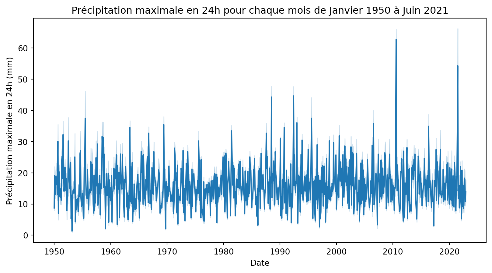
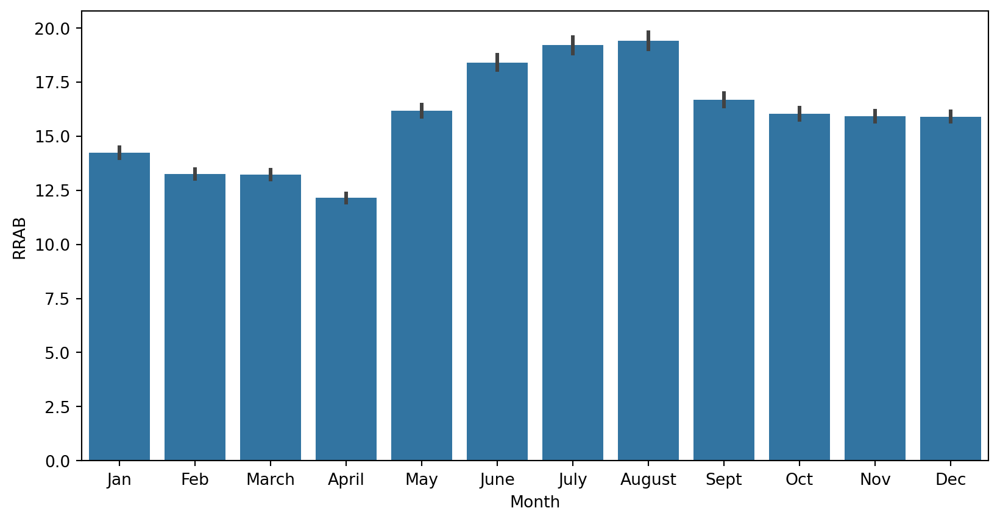

import matplotlib.pyplot as plt
# Data Visualization Libraries:
import seaborn as sns
import matplotlib.pyplot as plt
import plotly.express as px
import warnings
warnings.filterwarnings('ignore')
import pandas as pd
data = pd.read_csv('data.csv',sep=';')
columns = ['AAAAMM','RRAB']
data = data[columns]Différence entre climat et météo
news
Introduction
Il fera plus chaud demain, le temps était très pluvieurs hier, il fait froid aujourd’hui, les températures seront supérieures de trois degrés par rapport à la normale, etc. Ces phrases sont des exemples qui montrent que la météo est présente dans notre quotidien. Dès qu’on allume la télévision, la radio, nous voulons savoir comment nous habiller, si nous devons prendre un parapluie, etc.
Réchauffement climatique, fonte des calottes polaires, hausse du niveau des mers, records de températures, diminution des nos gaz à effet de serre… Le climat aussi est un sujet d’actualité, il mobilise les scientifiques, les politiques, les citoyens.
Au fond sait-on vraiment ce que c’est le climat et qu’elle est la différence entre le climat et la météo? Reprenons ces notions à la base.
Définition de la météo
La météo c’est le temps présent qui est caractérisé par l’ensemble des paramètres de l’atmosphère tels que la température, la pression atmosphérique, l’humidité, la vitesse et la direction du vent, la quantité de précipitations, etc. Ces paramètres peuvent être évalués à la perception; on ouvre la fenêtre, on observe le temps qu’il fait, on ressent la température, on voit s’il pleut, etc. On peut aussi les mesurer à l’aide de nombreux instruments et ainsi obtenir une description scientifique du temps qu’il fait. Par exemple, ce matin, il fait 15°C, le ciel est couvert, il pleut, le vent souffle à 20 km/h, etc. Maintenant, passons à la définition du climat.
Définition du climat
Lorsqu’on parle de climat, il est toujours question de l’atmosphère et de ces interactions avec le sol mais la façon et les échelles de temps pour l’étudier sont complétement différentes. Le climat est la succession de temps qu’il fait en un lieu donné sur une très longue période de temps. Le climat est décrit selon des éléments statistiques. Par exemple, à Bruz, il pleut en moyenne 1000 mm par an, la température moyenne est de 12°C, etc.
Récapitulatif
La météo est une notion instantanée, son évolution est perceptible directement par l’humain. Le climat est une notion statistique avec une évolution incomplètement perceptible par l’humain. C’est donc grâce à un enregistement méthodique et régulier de la météo dans un même lieu et sur une longue période que l’on parvient à décrire la météo.
Illustration par un exemple
Considérons les données ci-dessous qui représentent la précipitation maximale tombée en 24 heures pour chaque mois de Janvier 1950 à Décembre 2020. Ces données sont issues de la station météorologique de Rennes.
Chaque point correspond à une donnée météorologique.
data['AAAAMM'] = pd.to_datetime(data['AAAAMM'],format='%Y%m')
# faire un tri par date
data = data.sort_values(by='AAAAMM')
# Tracer le graphe en fonction de la date
fig,ax = plt.subplots(figsize=(10,5))
sns.lineplot(data=data, x='AAAAMM', y='RRAB')
plt.xlabel("Date")
plt.ylabel("Précipitation maximale en 24h (mm)")
plt.title("Précipitation maximale en 24h pour chaque mois de Janvier 1950 à Juin 2021")
plt.show()
Le graphique ci-dessous représente le diagramme en bâton de la précipitation maximale pour chaque mois depuis 1950 à 2022. On peut déduire que la précipitation maximale moyenne en Janvier est de 14 mm. Nous avons donc une donnée climatique.
fig,ax = plt.subplots(figsize=(10,5))
data = data.assign(month=lambda x: x['AAAAMM'].dt.month)
# Calculer la moyenne pour chaque mois
monthly_means = data.groupby('month')['RRAB'].mean()
sns.barplot(
data= data,
x='month',
y='RRAB',
)
plt.xlabel("Month")
plt.xticks(ticks = range(12), labels = ["Jan", "Feb", "March", "April", "May", "June", "July", "August", "Sept", "Oct", "Nov", "Dec"]);
Conclusion
La météo et le climat sont deux notions différentes. Pour terminer, il faut retenir que un orage violent, de fortes précipitations, demain il fera 25°C, le 1er juillet 2022 est 1.5°C plus chaud que la normale, etc. sont des notions météorologiques. En revanche, la temperature moyenne en Janvier est de 5°C, il pleut en moyenne 1000 mm par an, etc. sont des notions climatiques.